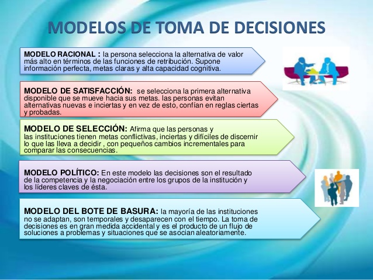

1. Modelo Racional
Se basa en analizar el problema paso a paso: identificarlo, recopilar información, generar alternativas, evaluarlas y elegir la mejor. Es lógico, estructurado y objetivo.
2. Modelo Intuitivo
La decisión se toma según la experiencia, instinto o percepción del individuo. Es útil cuando se tiene mucha práctica en un área o cuando el tiempo es limitado.
3. Modelo de Satisfacción (Herbert Simon)
En lugar de buscar la “mejor” opción, se elige una alternativa que sea suficientemente buena, especialmente cuando hay falta de información o recursos.
4. Modelo de Incrementalismo
Las decisiones se toman en pequeños pasos o ajustes graduales, en vez de cambios radicales. Adecuado para entornos complejos o inestables.
5. Modelo de Toma de Decisiones en Grupo
Incluye técnicas como lluvia de ideas, consenso, votación o método Delphi. Se usa cuando se quiere diversidad de perspectivas.
6. Modelo de Reconocimiento de Patrones (Klein)
Los expertos toman decisiones rápidas al reconocer patrones familiares en situaciones complejas, especialmente en crisis.
7. Modelo Heurístico
Se basa en reglas prácticas o atajos mentales (“heurísticas”) para decidir rápido. Puede ser útil, pero también generar sesgos.
8. Modelo de Análisis Costo–Beneficio
Consiste en medir los costos y beneficios de cada alternativa y elegir la que ofrezca mayor valor o menor impacto negativo.